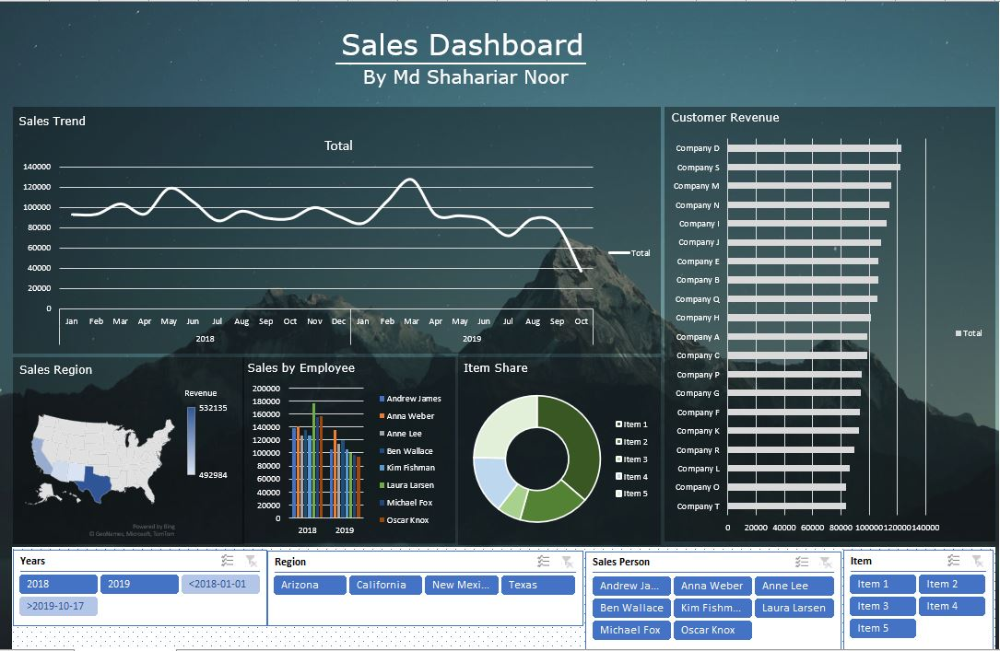

Excel Dashboard
Software: Microsoft Excel
Github Link: https://github.com/Shahriar-Noor/Excel-Dashboard

Background: An Excel dashboard is a visual representation of key metrics that allow company managers to quickly view and analyze their data in one place. Dashboards not only provide consolidated data views, but a self-service business intelligence opportunity, where users are able to filter the data to display just what’s important to them.
I designed an interactive Excel Dashboard by utilizing Pivot Tables and Pivot Charts. This dashboard showcases the sales of a company and is able to filter sales by region, employee and also by item share and customer revenue.
Click on the github link above to check the Excel dashboard.